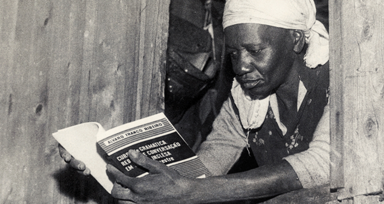

Escrevendo a miséria dos favelados.

Mulher, negra e brasileira que, diante da triste realidade de miséria na qual vivia, relatou e denunciou o seu cotidiano por meio da escrita. Sua obra mais famosa, nacionalmente e internacionalmente, é "Quarto de Despejo: Diário de uma Favelada".
"Não digam que fui rebotalho, que vivi à margem da vida. Digam que eu procurava trabalho, mas fui sempre preterida. Digam ao povo brasileiro que meu sonho era ser escritora, mas eu não tinha dinheiro para pagar uma editora."
Sua História
A escritora Carolina Maria de Jesus nasceu na cidade de Sacramento, em Minas Gerais, no ano de 1914. Entratanto, alguns anos depois mudou-se para São Paulo. Lá, manteve sua vida e a de mais três filhos seus por meio do trabalho de empregada e catadora de papel.
Conheceu, em 1958, o jornalista Audálio Dantas, o qual auxiliou na publicação de obras as quais Carolina construía. Nelas, escrevia sobre seu dia a dia na favela do Canindé, Zona Norte de São Paulo. A escritora frequentou a escola até o segundo ano do Ensino Fundamental, espaço no qual aprendeu o básico de leitura e de escrita. Ela não possuia livros que pudesse, por isso pedia livros emprestados a vizinhos.
Seu primeiro livro, Quarto de Despejo, vendeu dez mil cópias, em quatro dias. Nele, ela relata suas vivências na favela e fala sobre como sobrevivia à fome. Até hoje é um relato atual da condição de vida de muitas outras mulheres nas favelas do Brasil. Enquanto mulher, negra, mãe, solteira e moradora da favela, Carolina Maria de Jesus pode, sim, ser considerada uma mulher brasileira maravilhosa!
- Autora: Geovanna Domingos
- Técnica em Desenvolvimento de Sistemas
- Link para o gitHub